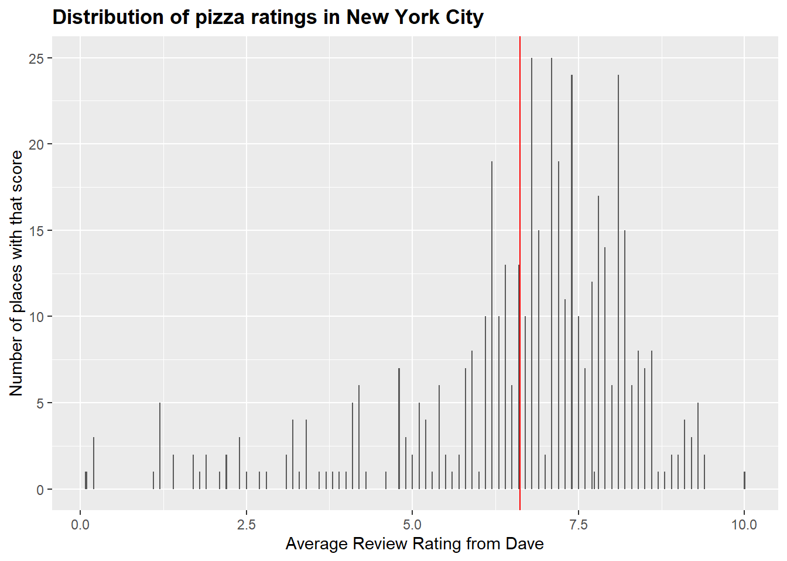

TidyTuesday1
Julia Frederick
10/3/2019
This week’s TidyTuesday is on Pizza Places
Lets load in the data
## Parsed with column specification:
## cols(
## polla_qid = col_double(),
## answer = col_character(),
## votes = col_double(),
## pollq_id = col_double(),
## question = col_character(),
## place = col_character(),
## time = col_double(),
## total_votes = col_double(),
## percent = col_double()
## )## Parsed with column specification:
## cols(
## .default = col_double(),
## name = col_character(),
## address1 = col_character(),
## city = col_character(),
## country = col_character()
## )## See spec(...) for full column specifications.## Parsed with column specification:
## cols(
## name = col_character(),
## address = col_character(),
## city = col_character(),
## country = col_character(),
## province = col_character(),
## latitude = col_double(),
## longitude = col_double(),
## categories = col_character(),
## price_range_min = col_double(),
## price_range_max = col_double()
## )Examine the data
## name address city
## Length:10000 Length:10000 Length:10000
## Class :character Class :character Class :character
## Mode :character Mode :character Mode :character
##
##
##
## country province latitude longitude
## Length:10000 Length:10000 Min. :21.42 Min. :-157.80
## Class :character Class :character 1st Qu.:34.42 1st Qu.:-104.80
## Mode :character Mode :character Median :40.12 Median : -82.91
## Mean :38.37 Mean : -90.06
## 3rd Qu.:40.91 3rd Qu.: -75.19
## Max. :64.85 Max. : -71.95
## categories price_range_min price_range_max
## Length:10000 Min. : 0.000 Min. : 7.00
## Class :character 1st Qu.: 0.000 1st Qu.:25.00
## Mode :character Median : 0.000 Median :25.00
## Mean : 4.655 Mean :27.76
## 3rd Qu.: 0.000 3rd Qu.:25.00
## Max. :50.000 Max. :55.00Load in the libraries needed
## -- Attaching packages ------------------------------------------------------------- tidyverse 1.2.1 --## v tibble 2.1.3 v readr 1.3.1
## v tibble 2.1.3 v purrr 0.3.2## -- Conflicts ---------------------------------------------------------------- tidyverse_conflicts() --
## x miscset::collapse() masks dplyr::collapse()
## x dplyr::filter() masks stats::filter()
## x dplyr::lag() masks stats::lag()
## x purrr::lift() masks caret::lift()##
## Attaching package: 'magrittr'## The following object is masked from 'package:purrr':
##
## set_names## The following object is masked from 'package:tidyr':
##
## extractVisualize the data
How many pizza places are there per state
#finding out how many places serve pizza per state
pizzastate <- pizza_datafiniti %>% group_by(province) %>% summarize(npizza = length(name))
#quick plot of pizza by state
ggplot(pizzastate, aes(x=province, y=npizza)) +
geom_point()
## province npizza
## Length:44 Min. : 2.0
## Class :character 1st Qu.: 23.5
## Mode :character Median : 88.0
## Mean : 227.3
## 3rd Qu.: 241.8
## Max. :2640.0## [1] 31## [1] "NY"New York has a lot of pizza places!
It has 2640 pizza places - lets look more at those
Some places appear to be duplicated, lets keep only those that are unique
#number of times a place is listed
chain <- nypizza %>% group_by(name) %>% summarize(nlocations = length(latitude))
#joining previous table to current
nypizza %<>% left_join(.,chain)## Joining, by = "name"Are they evenly distributed?
NYcities <- unchain %>% group_by(city) %>% summarize(npp = length(latitude))
ggplot(NYcities) +
geom_bar(aes(x=npp))No, one city appears to have way more than the others
## [1] 92## [1] "New York"New York City has the most, no surprise there.
The pizza_barstool dataset looks specifically at New York City so let’s switch to there
## name address1 city zip
## Length:463 Length:463 Length:463 Min. : 1748
## Class :character Class :character Class :character 1st Qu.:10009
## Mode :character Mode :character Mode :character Median :10019
## Mean :18531
## 3rd Qu.:11234
## Max. :94133
##
## country latitude longitude price_level
## Length:463 Min. :25.79 Min. :-122.41 Min. :0.00
## Class :character 1st Qu.:40.72 1st Qu.: -74.09 1st Qu.:1.00
## Mode :character Median :40.75 Median : -73.99 Median :1.00
## Mean :40.19 Mean : -77.44 Mean :1.46
## 3rd Qu.:40.78 3rd Qu.: -73.97 3rd Qu.:2.00
## Max. :45.00 Max. : -70.09 Max. :3.00
## NA's :2 NA's :2
## provider_rating provider_review_count review_stats_all_average_score
## Min. :2.000 Min. : 2.0 Min. :0.100
## 1st Qu.:3.500 1st Qu.: 74.0 1st Qu.:6.240
## Median :3.500 Median : 169.0 Median :7.162
## Mean :3.671 Mean : 386.1 Mean :6.876
## 3rd Qu.:4.000 3rd Qu.: 392.0 3rd Qu.:7.809
## Max. :5.000 Max. :5797.0 Max. :9.079
##
## review_stats_all_count review_stats_all_total_score
## Min. : 1.00 Min. : 0.10
## 1st Qu.: 4.00 1st Qu.: 23.65
## Median : 8.00 Median : 54.10
## Mean : 19.02 Mean : 149.93
## 3rd Qu.: 19.00 3rd Qu.: 140.20
## Max. :568.00 Max. :5045.60
##
## review_stats_community_average_score review_stats_community_count
## Min. : 0.000 Min. : 0.00
## 1st Qu.: 6.075 1st Qu.: 3.00
## Median : 7.225 Median : 7.00
## Mean : 6.457 Mean : 17.87
## 3rd Qu.: 7.873 3rd Qu.: 18.00
## Max. :10.000 Max. :567.00
##
## review_stats_community_total_score review_stats_critic_average_score
## Min. : 0.00 Min. : 0.0000
## 1st Qu.: 15.65 1st Qu.: 0.0000
## Median : 47.30 Median : 0.0000
## Mean : 142.28 Mean : 0.9717
## 3rd Qu.: 135.10 3rd Qu.: 0.0000
## Max. :5036.30 Max. :11.0000
##
## review_stats_critic_count review_stats_critic_total_score
## Min. :0.0000 Min. : 0.000
## 1st Qu.:0.0000 1st Qu.: 0.000
## Median :0.0000 Median : 0.000
## Mean :0.1425 Mean : 1.023
## 3rd Qu.:0.0000 3rd Qu.: 0.000
## Max. :5.0000 Max. :29.800
##
## review_stats_dave_average_score review_stats_dave_count
## Min. : 0.080 Min. :1
## 1st Qu.: 6.200 1st Qu.:1
## Median : 7.100 Median :1
## Mean : 6.623 Mean :1
## 3rd Qu.: 7.800 3rd Qu.:1
## Max. :10.000 Max. :1
##
## review_stats_dave_total_score
## Min. : 0.080
## 1st Qu.: 6.200
## Median : 7.100
## Mean : 6.623
## 3rd Qu.: 7.800
## Max. :10.000
## What is the average rating of a pizza place in NYC
## Min. 1st Qu. Median Mean 3rd Qu. Max.
## 0.080 6.200 7.100 6.623 7.800 10.000ggplot(pizza_barstool) +
geom_bar(aes(x=review_stats_dave_average_score)) +
ggtitle("Distribution of pizza ratings in New York City") +
theme(plot.title = element_text(lineheight = .8, face="bold")) +
xlab("Average Review Rating from Dave") +
ylab("Number of places with that score") +
geom_vline(xintercept = 6.623, color = "red")
For those that are “Above Average” what is the price level?
aboveavg <- subset(pizza_barstool, review_stats_dave_average_score >= 6.623)
ggplot(aboveavg) +
geom_bar(aes(x=review_stats_dave_average_score)) +
ggtitle("Distribution of ABOVE AVERAGE pizza ratings by\n price level in New York City") +
theme(plot.title = element_text(lineheight = .8, face="bold")) +
facet_grid(.~price_level) +
xlab("Average Review Rating from Dave") +
ylab("Number of places with that score")